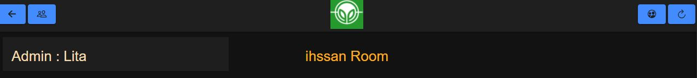

Willkommen in unserem App! Wir hoffen, es gefällt Ihnen
Im Anleitungabschnitt wird Ihnen Schritt für Schritt gezeigt, wie der App genau funktioniert.
Sobald Sie den App starten, werden Sie darum gebetten, falls Sie einen Account haben, sich anzumelden, falls nicht, sich einen neuen Account anzulegen.
Um einen neuen Account zu erstellen, sollten Sie einfach auf "create one" klicken
Danach werden die folgenden Eingabefelder erscheinen, um sie auszufüllen, mit Ihrem Darstellungsnamen, Ihrem eigenen Password und Ihrer Email Adresse:
Nachdem Sie alles richtig ausgefüllt haben, sollen Sie nun auf "Register Knopf" klicken!
Sie werden eine E-Mail an Ihrer eingegebenen Email Addresse bekommen, um Ihren Account zu verifizieren.
Alles hat geklappt! Glückwunsch Sie haben jetzt einen Account, mit dem Sie sich anmelden können.
Für die Anmeldung brauchen Sie nur Ihre Email Addresse und Ihres Password einzugeben.
Nach der erfolgreichen Anmeldung, sind Sie im App drin!
ganz oben rechts, finden Sie Ihren Darstellungnamen, wenn Sie darauf klicken, haben Sie drei Optionen Profil, Einstellung und abmelden
In der mitte, haben Sie zwei Optionen, entweder einen Raum zu erstellen oder einem bereits von Ihnen oder von anderen Benutzern erstellten Raum beizutreten
Falls Sie "erstellen" wählen:
werden Sie zwei Eingabefelder zu ausfüllen haben, der Erste, der Name von dem Raum und der Zweite ist der Raum-id.
Der Raum Id ist wie der Schlüssel zum Raum, man sollte ihn haben, um dem Raum nach der Erstellung beitreten zu können.
Jetzt beim Klicken auf "beitreten"
Sie oder anderen Benutzern haben einen Raum erstellt, wird dieser Raum in der Raumliste gelistet
wenn Sie schwerigkeiten beim Finden Ihres Raums haben, können Sie einfach den Namen von Ihrem Raum in der Suchefeld eingeben dann wird er gefunden.
Es gibt drei Möglichkeiten, um einem Raum beizutreten, die Erste wäre mit dem Raum-id.
wenn Sie den Raum-id von einem Raum wissen, sollen Sie ihn eingeben und Sie werden direkt zum Raum mit diesem ID weitergeleitet
Für die zweite Möglichkeit gibt es eine Vorausetztung. Sie müssen bereits ein Mitglied in dem Raum sein. d.h Sie müssten vorher dem Raum einmal beigetreten haben
Wenn Sie ein Mitglied in einem Raum sind dann sollen Sie den Raum in der Liste finden und auf "Enter" klicken.
Die dritte Möglichkeit wäre über die Einladung von anderen Benutzern.
Der Raum
die Obere Linie
Sie Haben zwei Optionen neben jedem Mitglied
freundschaftsanfrage schicken, falls er kein Freund von Ihnen ist, ansonsten wird diese Option gar nix gezeigt Einen Benutzer aus dem Raum werfen (nur der Admin darf das)
Freund kann man zum Raum einladen oder die Freundschaft entfernen
Freund einladen -

Wenn Sie einen Freund einladen, wird er eine Email an seiner Email Address bekommen, über die er dem Raum beitreten kann
Was kann man im Raum als Admin machen?
Als Admin kann man einen Auftrag vorschlagen, zum Beispiel wir wollen etwas von A nach B bewegen und kann er diesem Vorschlag eine Beschreibung einfügen.
Nachdem der Admin den Auftrag gepostet hat, können alle Benutzer im Raum ihn sehen und für diesen Auftrag die Umstetzungsschwerigkeit mit Spielkarten schätzen
Nach dem Wählen von einer Spielkarte, wird die Schätzung abgegeben und in der Schätzungensliste gelistet

Jedes Mal, wenn eine neue Schätzung abgegeben wird, wird die Schwerigkeitsgrad für den Auftrag neu berechnet und das Ergebnis in Form eines Fortschrittsindex veranschaulicht